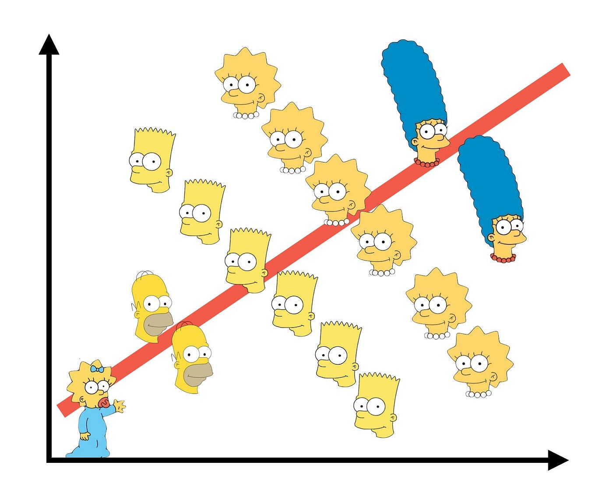

Simpson’s paradox, and why ratios refuse to add up
statistics
causal inference
Berkeley’s 1973 admissions gap disappears once you look at departments. The arithmetic behind that is simple, and it is a trap you can walk into with any pooled comparison.
Author
Kyle Tong
Published
September 12, 2026
In 1973 the graduate school at Berkeley admitted about 44% of men who applied and about 30% of women. Thousands of applicants sit behind those two numbers, so the gap is not noise. Split the same applicants by department and it very nearly disappears. In the largest department of all, women were admitted at a higher rate than men.
Nothing was recounted. The two statements are about the same people.

A relationship that runs one way inside every group and the other way once the groups are pooled.
What the Berkeley numbers look like
R ships with the data, so you can check this in four lines.
Table 1: Admission rates by department, six largest departments, Berkeley 1973.
Department
Men applied
Men admitted
Women applied
Women admitted
A
825
62%
108
82%
B
560
63%
25
68%
C
325
37%
593
34%
D
417
33%
375
35%
E
191
28%
393
24%
F
373
6%
341
7%
Departments A and B admitted more than 60% of everyone who applied. Departments C through F admitted far fewer. Men applied overwhelmingly to A and B; women applied overwhelmingly to C through F.
and the weights \(w_d\) are part of the data, not a constant you can divide out. Men and women faced the same \(r_d\) but carried different \(w_d\), and the difference in weights is bigger than the differences in rates. Pooling therefore measures something nobody intended to measure: where each group chose to apply.
Why it feels impossible
Counts behave the way intuition expects. If men outnumber women in every department, they outnumber women overall, always. We quietly extend that rule to percentages, and for percentages it is false. Adding a fraction to a fraction means adding numerators and denominators separately, and the denominators are free to move.
The phenomenon predates its name by half a century. Pearson noticed in 1899 that mixing two populations manufactures correlations that exist in neither, and Yule gave the contingency-table version in 1903. Simpson’s 1951 paper worked out what the reversal means for interpreting interaction, and Blyth attached his name to it in 1972. Yule had it first, which is why some writers call it the Yule-Simpson effect.
One thing the Berkeley example does not show is that there was no discrimination. Bickel and his coauthors, writing in Science in 1975, made that point themselves: conditioning on department moves the question rather than closing it, since departments differ in funding and capacity, and applicants do not choose where to apply in a vacuum.
Takeaway
A pooled comparison is an average, and an average has weights. When two groups are averaged with different weights, the pooled numbers can point the opposite way from every group inside them. Before you read anything into a headline rate, find out what is being averaged and how the weights differ. The reversal is not a rare pathology; it is what happens whenever composition and outcome are related.
Admissions counts are UCBAdmissions in R’s datasets package, from Bickel, Hammel and O’Connell (1975), Science 187, 398–404.